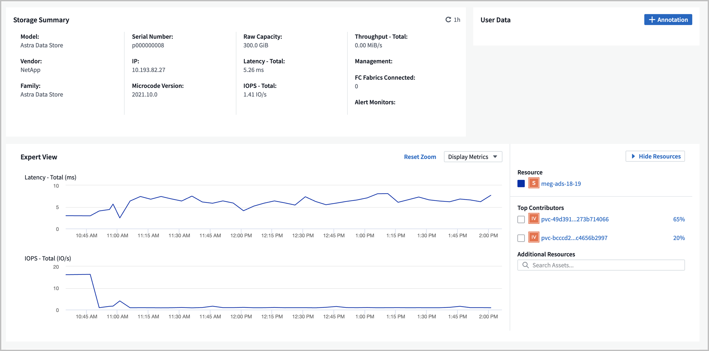

Request doc changes
Request doc changes Edit this page
Edit this page Learn how to contribute
Learn how to contributeMonitor metrics with Cloud Insights
Contributors
You can monitor Astra Data Store preview metrics using Cloud Insights.
Here are some sample Astra Data Store preview metrics displayed in Cloud Insights:

You can also display a list of metrics generated in Astra Data Store preview by using the Open Metrics API help.
Complete Cloud Insights connection prerequisite tasks
Prior to connecting Astra Data Store with Cloud Insights, you need to complete these tasks:
-
Install the Astra Data Store Monitoring Operator that is part of the Astra Data Store preview installation instructions.
-
Install the kubectl-astrads binary that is part of the Astra Data Store preview installation instructions.
-
Ensure that the following commands are available:
awk, curl, grepandjq
Gather the following information:
-
Cloud Insights API access token with Read/Write permissions to the categories: Acquisition Unit, Data Collection, Data Ingestion and Log Ingestion. This will be used for the read/write operations, setting up the Acquisition Unit, and setting up data ingest processes.
-
Kubernetes API server IP address and port. This is used to monitor the Astra Data Store preview cluster.
-
Kubernetes API token. This is used to call Kubernetes APIs.
-
Persistent volume configuration. Information about how persistent volumes are provisioned.
Acquisition Unit storage
The Acquisition Unit requires three persistent volumes for storing installation files, configuration data and logs. The Monitoring Operator uses the default storage class to create persistent volume claims. You can specify a different storage class name using the -s option when running the installer script.
If your Kubernetes cluster does not have a storage provisioner (such as NetApp Trident), you can provide a local filesystem path using the -r option when running the installer script. When the -r option is set, the installer script creates three persistent volumes inside the provided directory. This directory requires a minimum of 150 GB free space.
Download and run the installation script
Cloud Insights provides a Bash script to enable Astra Data Store preview monitoring via the Monitoring Operator. The install script will install an Acquisition Unit with the Astra Data Store collector, a Telegraf agent, and a Fluent Bit agent.
The Cloud Insights tenant domain name and selected Cloud Insights API access token will be embedded in the installer script when it is downloaded.
Then, metrics will be sent as follows:
-
Telegraf will send metrics to the Cloud Insights data lake.
-
Fluent Bit will send logs to the log ingestion service.
Display installer script help
The full help text for the installer script is shown below:
Display installer script help text:
./cloudinsights-ads-monitoring.sh -h
Response:
USAGE: cloudinsights-ads-monitoring.sh [OPTIONS]
Configure monitoring of Astra Data Store by Cloud Insights.
OPTIONS:
-h Display this help message.
-d ci_domain_name Cloud Insights tenant domain name.
-i kubernetes_ip Kubernetes API server IP address.
-k ci_api_key Cloud Insights API Access Token.
-n namespace Namespace for monitoring components. (default: netapp-monitoring)
-p kubernetes_port Kubernetes API server port. (default: 6443)
-r root_pv_dir Create 3 Persistent Volumes in this directory for the Acquisition Unit.
Only specify this option if there is no Storage Provisioner installed and the PVs do not already exist.
-s storage_class Storage Class name for provisioning Acquisition Unit PVs. If not specified, the default storage class will be used.
-t kubernetes_token Kubernetes API server token.
Run the install script
-
Create a Cloud Insights account, if you don’t already have one.
-
Log in to Cloud Insights.
-
From the Cloud Insights menu, click on Admin > Data Collectors.
-
Click on + Data Collector to add a new collector.

-
Click on the Astra Data Store tile.
-
Select the correct Cloud Insights API access token or create a new one.
-
Follow the instructions to download the installer script, update the permissions, and run the script.
The script contains your Cloud Insights tenant URL and the selected Cloud Insights API access token.

-
Click Complete Setup after the script completes.
After the installation script completes, the Astra Data Store collector appears in the Datasources list.

If the script exits due to an error, you can run it again later once the error is resolved. The script supports additional parameters such as the Monitoring Operator namespace and Kubernetes API server port if your environment does not use the default settings. Use the -hoption in./cloudinsights-ads-monitoring.sh -hto see the usage and help text.The installation script produces output that looks like this when the configuration is successful:
Configuring Cloud Insights monitoring for Astra Data Store . . . Configuring monitoring namespace ... Configuring output sink and Fluent Bit plugins Configuring Telegraf plugins Configuring Acquisition Unit ... Acquisition Unit has been installed successfully. Configuring Astra Data Store data collector Astra Data Store collector data '<CLUSTER_NAME>' created Configuration done!
Example Agent CR
Below is an example of what the monitoring-netapp agent CR will look like after running the installer script.
spec:
au:
isEnabled: true
storageClassName: auto-sc
cluster-name: meg-ads-21-22-29-30
docker-repo: docker.repo.eng.netapp.com/global/astra
fluent-bit:
- name: ads-tail
outputs:
- sink: ADS_STDOUT
substitutions:
- key: TAG
value: firetapems
- key: LOG_FILE
values:
- /var/log/firetap/*/ems/ems
- /var/log/firetap/ems/*/ems/ems
- key: ADS_CLUSTER_NAME
value: meg-ads-21-22-28-29-30
- name: agent
- name: ads-tail-ci
outputs:
- sink: CI
substitutions:
- key: TAG
value: netapp.ads
- key: LOG_FILE
values:
- /var/log/firetap/*/ems/ems
- /var/log/firetap/ems/*/ems/ems
- key: ADS_CLUSTER_NAME
value: meg-ads-21-22-28-29-30
output-sink:
- api-key: abcd
domain-name: bzl9ngz.gst-adsdemo.ci-dev.netapp.com
name: CI
serviceAccount: sa-netapp-monitoring
telegraf:
- name: ads-open-metric
outputs:
- sink: CI
run-mode:
- ReplicaSet
substitutions:
- key: URLS
values:
- http://astrads-metrics-service.astrads-system.svc.cluster.local:9341
- key: METRIC_TYPE
value: ads-metric
- key: ADS_CATEGORY
value: netapp_ads
- key: ADS_CLUSTER_NAME
value: meg-ads-21-22-28-29-30
- name: agent
status:
au-pod-status: UP
au-uuid: eddeccc6-3aa3-4dd2-a98c-220085fae6a9
Edit the Cloud Insights connection
You can later edit the Kubernetes API token or the Cloud Insights API access token:
-
If you want to update Kubernetes API token, you should edit the Astra Data Store collector from the Cloud Insights UI.
-
If you want to update the Cloud Insights API access token used for telemetry and logs, you should edit the Monitoring Operator CR using kubectl commands.
Update the Kubernetes API token
-
Log in to Cloud Insights.
-
Select Admin > Data Collectors to access the Data Collectors page.
-
Find the entry for the Astra Data Store cluster.
-
Click on the menu on the right side of the page, and select Edit.
-
Update the Kubernetes API Token field with the new value.
-
Select Save Collector.
Update the Cloud Insights API access token
-
Log in to Cloud Insights.
-
Create a new Cloud Insights API access token by selecting Admin > API Access and clicking +API Access Token.
-
Edit the Agent CR:
kubectl --namespace netapp-monitoring edit agent agent-monitoring-netapp
-
Locate the
output-sinksection and find the entry with the nameCI. -
For the label
api-key, replace the current value with the new Cloud Insights API access token.The section looks something like this:
output-sink: - api-key: <api key value> domain-name: <tenant url> name: CI -
Save and quit the editor window.
The Monitoring Operator will update Telegraf and Fluent Bit to use the new Cloud Insights API access token.
Disconnect from Cloud Insights
To disconnect from Cloud Insights, you will need to delete the Astra Data Store collector from the Cloud Insights UI first. After that is complete, you can remove the Acquisition Unit, Telegraf and Fluent Bit configurations from the Monitoring Operator.
Remove the Astra Data Store preview collector
-
Log in to Cloud Insights.
-
Select Admin > Data Collectors to access the Data Collectors page.
-
Find the entry for the Astra Data Store cluster.
-
Select the menu on the right side of the screen, and select Delete.
-
Click Delete on the confirmation page.
Remove the Acquisition Unit, Telegraf and Fluent Bit
-
Edit the Agent CR:
kubectl --namespace netapp-monitoring edit agent agent-monitoring-netapp
-
Locate the
ausection and setisEnabledtofalse -
Locate the
fluent-bitsection and remove the plugin namedads-tail-ci. If there are no more plugins, you can remove thefluent-bitsection. -
Locate the
telegrafsection and remove the plugin namedads-open-metric. If there are no more plugins, you can remove thetelegrafsection. -
Locate the
output-sinksection and remove the sink namedCI. -
Save and quit the editor window.
The Monitoring Operator will update the Telegraf and Fluent Bit configurations and delete the Acquisition Unit pod.
-
If you used local directories for the Acquisition Unit PVs instead of a Storage Provisioner, delete the PVs:
kubectl delete pv au-lib au-log au-pv
Then, delete the actual directories on the node where the Acquisition Unit was running.
-
After the Acquisition Unit pod has been deleted, you can delete the Acquisition Unit from Cloud Insights.
-
In the Cloud Insights menu, select Admin > Data Collectors.
-
Click on the Acquisition Units tab.
-
Click on the menu next to the Acquisition Unit pod.
-
Select Delete.
-
The Monitoring Operator updates the Telegraf and Fluent Bit configurations and removes the Acquisition Unit.
Open Metrics API help
Here is a list of APIs that you can use to gather metrics from Astra Data Store preview.
-
The "HELP" line describes the metric.
-
The "TYPE" line indicates whether the metric is a gauge or a counter.
# HELP astrads_cluster_capacity_logical_percent Percentage cluster logical capacity that is used (0-100) # TYPE astrads_cluster_capacity_logical_percent gauge # HELP astrads_cluster_capacity_max_logical Max Logical capacity of the cluster in bytes # TYPE astrads_cluster_capacity_max_logical gauge # HELP astrads_cluster_capacity_max_physical The sum of the space in the cluster in bytes for storing data after provisioning efficiencies, data reduction algorithms and replication schemes are applied # TYPE astrads_cluster_capacity_max_physical gauge # HELP astrads_cluster_capacity_ops The IO operations capacity of the cluster # TYPE astrads_cluster_capacity_ops gauge # HELP astrads_cluster_capacity_physical_percent The percentage of cluster physical capacity that is used (0-100) # TYPE astrads_cluster_capacity_physical_percent gauge # HELP astrads_cluster_capacity_used_logical The sum of the bytes of data in all volumes in the cluster before provisioning efficiencies, data reduction algorithms and replication schemes are applied # TYPE astrads_cluster_capacity_used_logical gauge # HELP astrads_cluster_capacity_used_physical Used Physical capacity of a cluster in bytes # TYPE astrads_cluster_capacity_used_physical gauge # HELP astrads_cluster_other_latency The sum of the accumulated latency in seconds for other IO operations of all the volumes in a cluster. Divide by astrads_cluster_other_ops to get the average latency per other operation # TYPE astrads_cluster_other_latency counter # HELP astrads_cluster_other_ops The sum of the other IO operations of all the volumes in a cluster # TYPE astrads_cluster_other_ops counter # HELP astrads_cluster_read_latency The sum of the accumulated latency in seconds of read IO operations of all the volumes in a cluster. Divide by astrads_cluster_read_ops to get the average latency per read operation # TYPE astrads_cluster_read_latency counter # HELP astrads_cluster_read_ops The sum of the read IO operations of all the volumes in a cluster # TYPE astrads_cluster_read_ops counter # HELP astrads_cluster_read_throughput The sum of the read throughput of all the volumes in a cluster in bytes # TYPE astrads_cluster_read_throughput counter # HELP astrads_cluster_storage_efficiency Efficacy of data reduction technologies. (logical used / physical used) # TYPE astrads_cluster_storage_efficiency gauge # HELP astrads_cluster_total_latency The sum of the accumulated latency in seconds of all IO operations of all the volumes in a cluster. Divide by astrads_cluster_total_ops to get average latency per operation # TYPE astrads_cluster_total_latency counter # HELP astrads_cluster_total_ops The sum of the IO operations of all the volumes in a cluster # TYPE astrads_cluster_total_ops counter # HELP astrads_cluster_total_throughput The sum of the read and write throughput of all the volumes in a cluster in bytes # TYPE astrads_cluster_total_throughput counter # HELP astrads_cluster_utilization_factor The ratio of the current cluster IO operations based on recent IO sizes to the cluster iops capacity. (0.0 - 1.0) # TYPE astrads_cluster_utilization_factor gauge # HELP astrads_cluster_volume_used The sum of used capacity of all the volumes in a cluster in bytes # TYPE astrads_cluster_volume_used gauge # HELP astrads_cluster_write_latency The sum of the accumulated latency in seconds of write IO operations of all the volumes in a cluster. Divide by astrads_cluster_write_ops to get the average latency per write operation # TYPE astrads_cluster_write_latency counter # HELP astrads_cluster_write_ops The sum of the write IO operations of all the volumes in a cluster # TYPE astrads_cluster_write_ops counter # HELP astrads_cluster_write_throughput The sum of the write throughput of all the volumes in a cluster in bytes # TYPE astrads_cluster_write_throughput counter # HELP astrads_disk_base_seconds Base for busy, pending and queued. Seconds since collection began # TYPE astrads_disk_base_seconds counter # HELP astrads_disk_busy Seconds the disk was busy. 100 * (astrads_disk_busy / astrads_disk_base_seconds) = percent busy (0-100) # TYPE astrads_disk_busy counter # HELP astrads_disk_capacity Raw Capacity of a disk in bytes # TYPE astrads_disk_capacity gauge # HELP astrads_disk_io_pending Summation of the count of pending io operations for a disk times time. Divide by astrads_disk_base_seconds to get the average pending operation count # TYPE astrads_disk_io_pending counter # HELP astrads_disk_io_queued Summation of the count of queued io operations for a disk times time. Divide by astrads_disk_base_seconds to get the average queued operations count # TYPE astrads_disk_io_queued counter # HELP astrads_disk_read_latency Total accumulated latency in seconds for disk reads. Divide by astrads_disk_read_ops to get the average latency per read operation # TYPE astrads_disk_read_latency counter # HELP astrads_disk_read_ops Total number of read operations for a disk # TYPE astrads_disk_read_ops counter # HELP astrads_disk_read_throughput Total bytes read from a disk # TYPE astrads_disk_read_throughput counter # HELP astrads_disk_write_latency Total accumulated latency in seconds for disk writes. Divide by astrads_disk_write_ops to get the average latency per write operation # TYPE astrads_disk_write_latency counter # HELP astrads_disk_write_ops Total number of write operations for a disk # TYPE astrads_disk_write_ops counter # HELP astrads_disk_write_throughput Total bytes written to a disk # TYPE astrads_disk_write_throughput counter # HELP astrads_value_scrape_duration Duration to scrape values # TYPE astrads_value_scrape_duration gauge # HELP astrads_volume_capacity_available The minimum of the available capacity of a volume and the available capacity of the cluster in bytes # TYPE astrads_volume_capacity_available gauge # HELP astrads_volume_capacity_available_logical Logical available capacity of a volume in bytes # TYPE astrads_volume_capacity_available_logical gauge # HELP astrads_volume_capacity_percent Percentage of volume capacity available (0-100). (capacity available / provisioned) * 100 # TYPE astrads_volume_capacity_percent gauge # HELP astrads_volume_capacity_provisioned Provisioned capacity of a volume in bytes after setting aside the snapshot reserve. (size - snapshot reserve = provisioned) # TYPE astrads_volume_capacity_provisioned gauge # HELP astrads_volume_capacity_size Total capacity of a volume in bytes # TYPE astrads_volume_capacity_size gauge # HELP astrads_volume_capacity_snapshot_reserve_percent Snapshot reserve percentage of a volume (0-100) # TYPE astrads_volume_capacity_snapshot_reserve_percent gauge # HELP astrads_volume_capacity_snapshot_used The amount of volume snapshot data that is not in the active file system in bytes # TYPE astrads_volume_capacity_snapshot_used gauge # HELP astrads_volume_capacity_used Used capacity of a volume in bytes. This is bytes in the active filesystem unless snapshots are consuming more than the snapshot reserve. (bytes in the active file system + MAX(0, snapshot_used-(snapshot_reserve_percent/100*size)) # TYPE astrads_volume_capacity_used gauge # HELP astrads_volume_other_latency Total accumulated latency in seconds for operations on a volume that are neither read or write. Divide by astrads_volume_other_ops to get the average latency per other operation # TYPE astrads_volume_other_latency counter # HELP astrads_volume_other_ops Total number of operations for a volume that are neither read or write # TYPE astrads_volume_other_ops counter # HELP astrads_volume_read_latency Total accumulated read latency in seconds for a volume. Divide by astrads_volume_read_ops to get the average latency per read operation # TYPE astrads_volume_read_latency counter # HELP astrads_volume_read_ops Total number of read operations for a volume # TYPE astrads_volume_read_ops counter # HELP astrads_volume_read_throughput Total read throughput for a volume in bytes # TYPE astrads_volume_read_throughput counter # HELP astrads_volume_total_latency Total accumulated latency in seconds for all operations on a volume. Divide by astrads_volume_total_ops to get the average latency per operation # TYPE astrads_volume_total_latency counter # HELP astrads_volume_total_ops Total number of operations for a volume # TYPE astrads_volume_total_ops counter # HELP astrads_volume_total_throughput Total thoughput for a volume in bytes # TYPE astrads_volume_total_throughput counter # HELP astrads_volume_write_latency Total accumulated write latency in seconds for volume. Divide by astrads_volume_write_ops to get the average latency per write operation # TYPE astrads_volume_write_latency counter # HELP astrads_volume_write_ops Total number of write operations for a volume # TYPE astrads_volume_write_ops counter # HELP astrads_volume_write_throughput Total write thoughput for a volume in bytes # TYPE astrads_volume_write_throughput counter